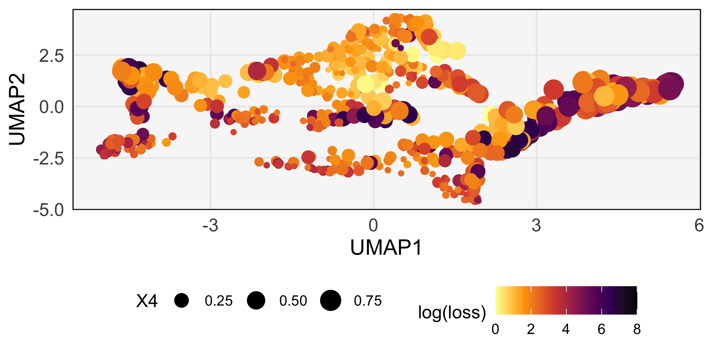
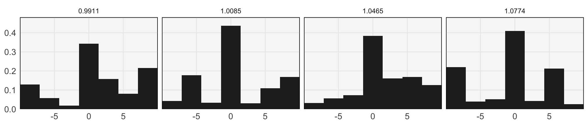
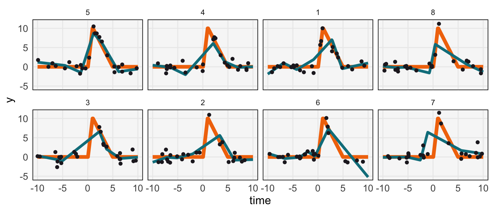

8 Intervention_Optimize
(this can be slow)
library(tidyverse)
library(laGP)
library(purrr)
library(generative)
library(splines)
review_theme()
set.seed(123)### This is very slow
n_init <- 100
n_interval <- 7
intervals <- make_intervals(n_interval)
times <- seq(-10, 10, length.out = 200)
pf <- peak_fun(times, 1, 10, 5)
# initial sample of weights
betas <- rerun(n_init, rnorm(n_interval, 0, 1))
losses <- map_dbl(betas, ~ evaluate_weights(., intervals, times, pf, N = 25))We compute the main Bayesian optimization loop below.
n_test <- 500
n_add <- 10
n_iters <- 50
for (i in seq_len(n_iters)) {
# fit a GP to the betas / losses already computed
beta_norm <- scale_list(betas)
beta_test <- rerun(n_test, runif(n_interval, -4, 4))
# find most promising new test points
y_hat <- aGP(beta_norm, losses, scale_list(beta_test), verb = 0)
sort_ix <- order(y_hat$mean - y_hat$var)
# evaluate loss on new test points
new_betas <- beta_test[sort_ix][1:n_add]
betas <- c(betas, new_betas)
losses <- c(
losses,
map_dbl(new_betas, ~ evaluate_weights(., intervals, times, pf, N = 25))
)
}Here are some of the weightings that we should use for longitudinal sampling. They generally favor more samples in the region where the peak is located.
w <- bind_rows(map(betas, ~ data.frame(exp(t(.)))))
w <- w / rowSums(w)
w$loss <- losses
library(embed)
library(tidymodels)
w_reduce <- recipe(~ ., data = w) %>%
update_role(loss, new_role = "id")
umap_rec <- step_umap(w_reduce, all_predictors(), neighbors = 30, min_dist = 0.05)
scores <- prep(umap_rec) %>%
juice() %>%
bind_cols(w %>% select(-loss))ggplot(scores) +
geom_point(aes(UMAP1, UMAP2, col = log(loss), size = X4)) +
scale_color_viridis_c(direction = -1, limits = c(0, 8), option = "inferno")
w_df <- w %>%
mutate(id = row_number()) %>%
arrange(-loss) %>%
pivot_longer(starts_with("X"), names_to = "component")
intervals_df <- as.data.frame(intervals)
intervals_df$component <- paste0("X", 1:nrow(intervals))
w_df <- w_df %>%
left_join(intervals_df)ggplot(w_df %>% filter(log(loss) < 0.08)) +
geom_rect(aes(xmin = V1, xmax = V2, ymin = 0, ymax = value), fill = "#262526") +
scale_x_continuous(expand = c(0, 0), breaks = c(-5, 0, 5)) +
scale_y_continuous(expand = c(0, 0, 0.1, 0)) +
facet_grid(. ~ round(loss, 4))
u <- map(1:8, ~ runif(25, -10, 10))
examples <- map_dfr(u,
~ data.frame(
u = .,
y = gaussian_noise(pf, .)
),
.id = "run"
) %>%
mutate(run = as.factor(run))
preds <- examples %>%
split(.$run) %>%
map_dfr(~ {
fit <- lm(y ~ bs(u, df = 6, degree = 1, Boundary.knots = c(-10, 10)), data = .)
data.frame(
times = times,
mu = pf(times),
f_hat = predict(fit, newdata = data.frame(u = times))
)
},
.id = "run"
) %>%
group_by(run) %>%
mutate(
run = as.factor(run),
loss = (f_hat - mu) ^ 2
)
truth <- data.frame(times = times, mu = pf(times))
run_order <- preds %>%
group_by(run) %>%
summarise(mse = mean(loss)) %>%
arrange(mse) %>%
pull(run)
preds <- preds %>%
mutate(run = factor(run, levels = run_order))
examples <- examples %>%
mutate(run = factor(run, levels = run_order))
ggplot(preds) +
geom_line(aes(times, mu), col = "#F27507", linewidth = 2) +
geom_line(aes(times, f_hat), col = "#087F8C", linewidth = 1.5) +
geom_point(data = examples, aes(u, y), col = "#221F26") +
labs(y = "y", x = "time") +
facet_wrap(~ run, ncol = 4)